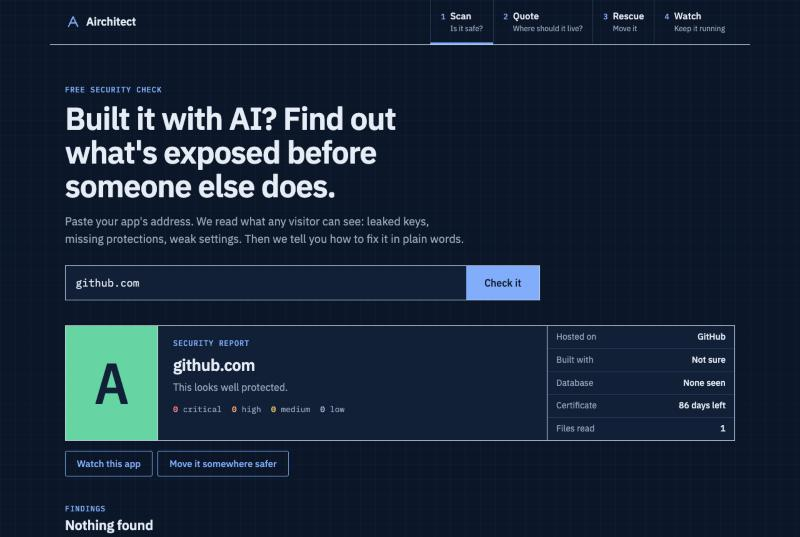
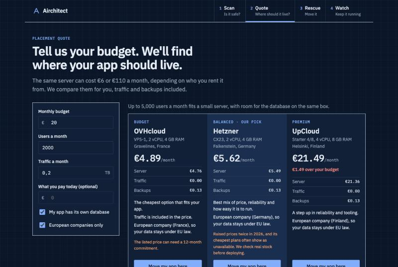
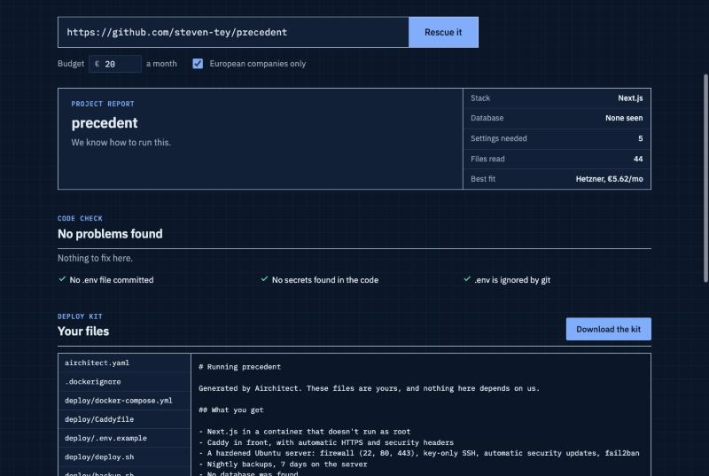
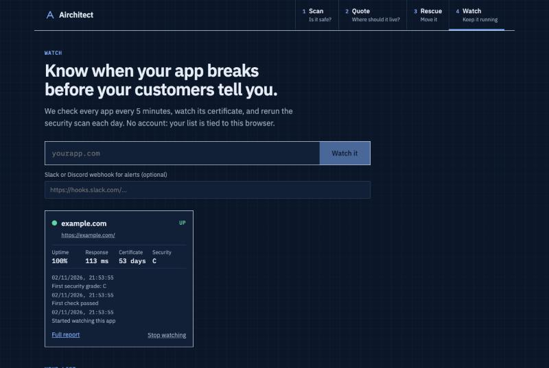

Self-hosted · free for non-commercial use
Airchitect checks a web app for leaked keys and weak settings, finds the cloud that fits your budget, writes a hardened deploy kit and keeps an eye on the app once it's live.
Install it Source on GitHubA 40-second recording of the real app running locally: scan github.com, compare clouds, rescue a public Next.js repo, then watch example.com.
Find leaked keys and missing protections on a live app.
Compare clouds by price, reliability and tooling.
Turn a repo into a hardened, ready-to-deploy server.
Uptime, certificates and a daily security check.




You need Node.js 24 or newer.
git clone https://github.com/abozaralizadeh/Airchitect airchitect cd airchitect/backend && npm install && npm run dev
In a second terminal:
cd airchitect/frontend && npm install && npm run dev
Then open http://localhost:5173.
On a fresh Ubuntu VM, one script installs everything, sets up HTTPS and starts the service. Rerun it to update.
sudo DOMAIN=app.example.com ./setup_service.sh journalctl -u airchitect.service -f
Build the backend, then add the MCP server to your agent. It gets three tools: scan_url, quote_cloud and rescue_project.
{ "mcpServers": { "airchitect": { "command": "node", "args": ["/path/to/airchitect/backend/dist/mcp.js"] } } }
This page is static. The app itself needs its backend to scan sites and fetch repos, so there's no live demo here. Run it locally in a couple of minutes instead.